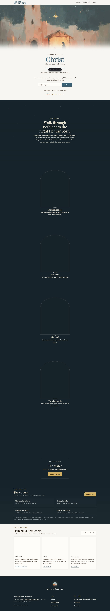
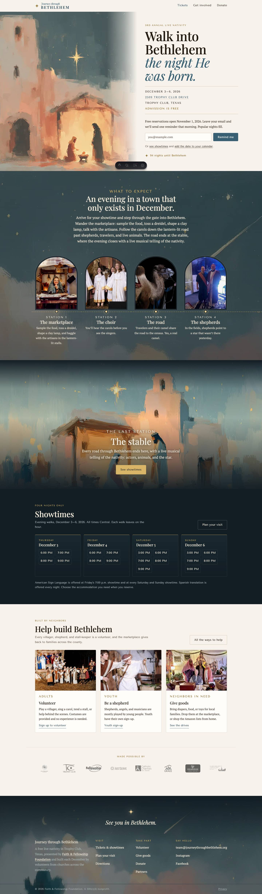
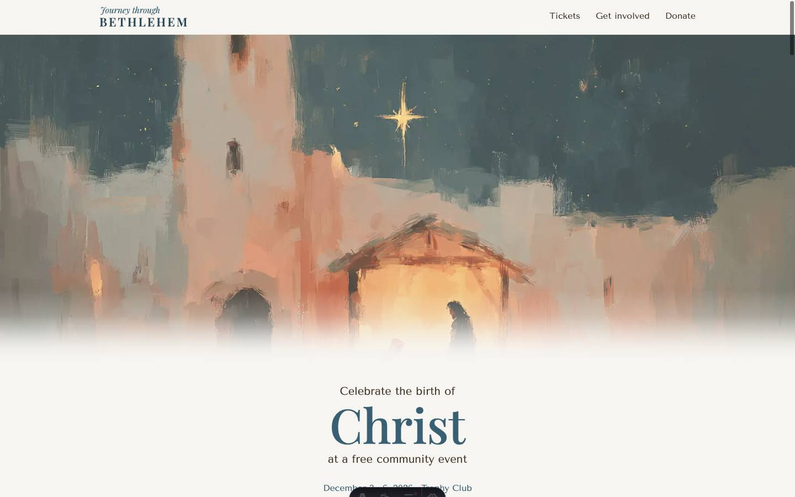
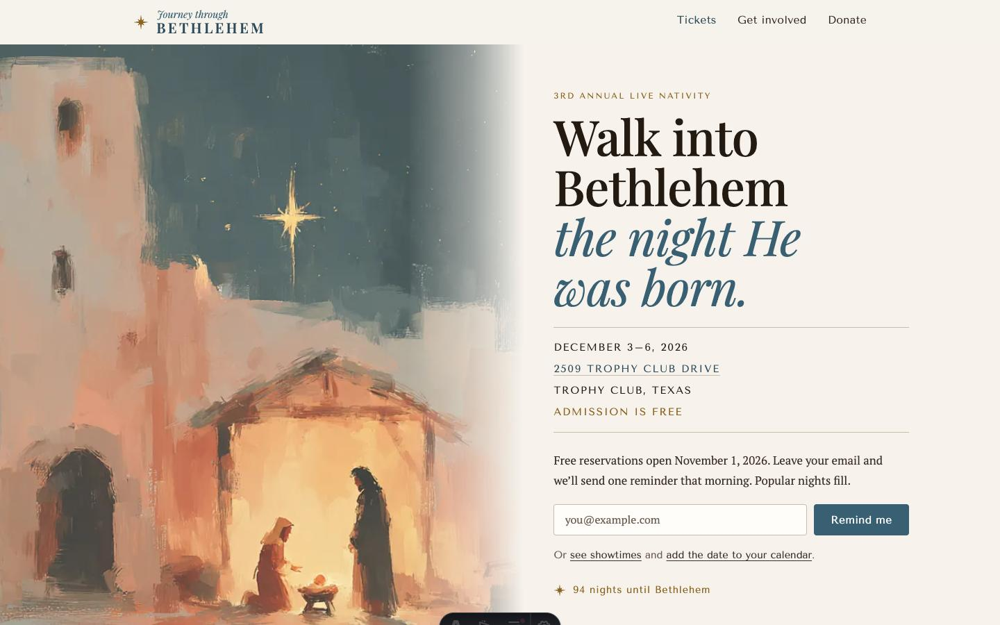
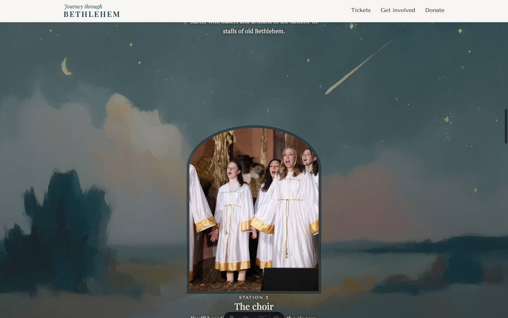
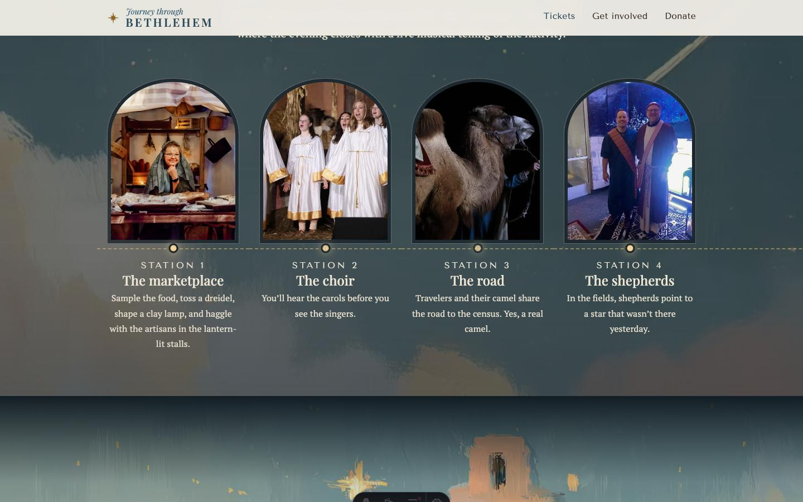
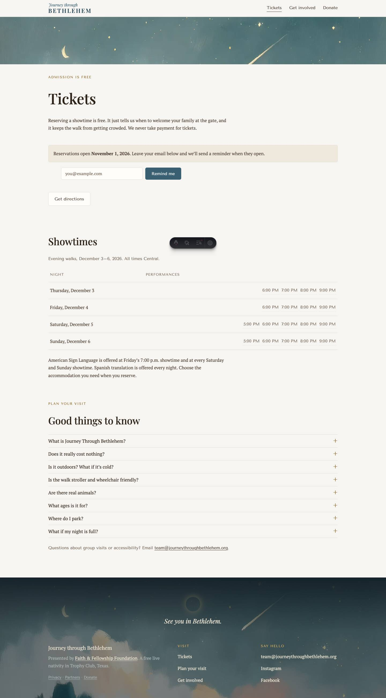
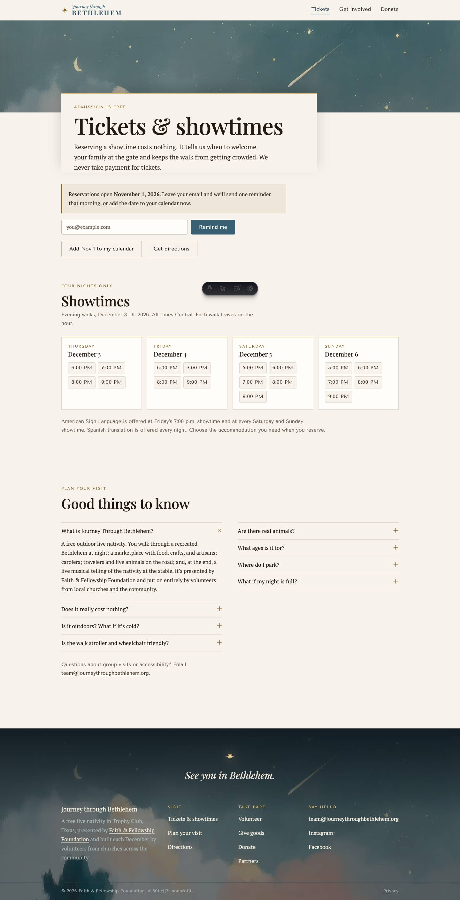
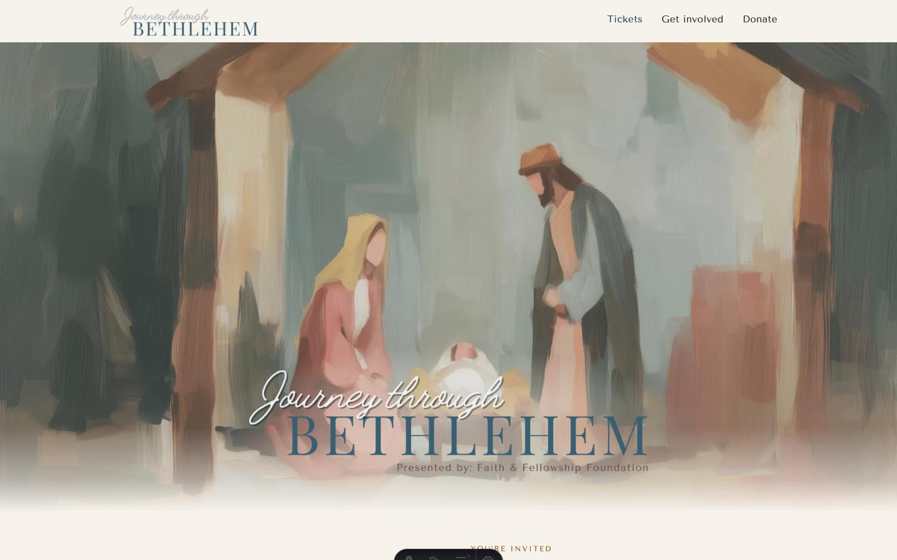

What changed on the public site, why each change was made, and what is still owed by the organizers. The site was already good. This pass makes it feel designed as one place rather than assembled from sections.
The idea in one line
The site is an opened invitation, and the night falls behind it. Paintings are the environment, photographs are artifacts brought back from the walk, and the type is set like an engraved card.
Nothing from Squarespace was copied. Last year's page was consulted for one thing only: facts the new site had dropped. It mentions sampling food, tossing a dreidel, making a clay lamp, and that the evening ends in a live musical performance of the nativity. Those facts are now in the Walk copy and the FAQ.
Home page, before and after

Before · 7,938px tall. Letterboxed painting, centered card, five full-screen stations before showtimes.

After · about 4,850px tall. Diptych hero, the Walk as a route, showtimes two screens down.
1. Hero as a diptych

Before. The dissolve erased Mary, Joseph, and the manger.

After. Full-height portrait crop keeps tower, star, stable, and manger. The painting dissolves sideways into paper.
The headline promotes the best line the site already had: "Walk into Bethlehem the night He was born." The old hero copy was inherited from last year.
Dates, address, town, and "Admission is free" are set as an engraved facts block between hairlines. A parent gets everything in five seconds.
The call to action is state-aware: email reminder before November 1, "Reserve a showtime" once tickets open, "See tonight's showtimes" during event week, a thank-you and 2027 signup after.
Load sequence: painting fades in, then each line of the invitation rises in order. Disabled under reduced motion.
2. The Walk as a route, not a slideshow

Before. Each station was a 92vh screen with one small photo. Six thousand pixels of scrolling for four sentences.

After. Four doorways on a drawn road, in the order visitors meet them, lanterns at each stop. Mobile runs the road down the left edge.
The station copy now describes the real program: food, dreidels, clay lamps, artisans, carolers, a camel, shepherds.
The finale keeps its role as the pattern-breaker: the stable painting, one line, one button. Its copy now says the evening closes with a live musical telling of the nativity.
The sky painting is a fixed backdrop with a slow scroll-driven drift where browsers support scroll timelines. Stars still breathe.
3. Showtimes as four lit windows
One column per night on desktop, weekday as an engraved label, date in Playfair, times as quiet chips before launch and glowing links after. The same component appears on paper on the tickets page.
Interior pages share one identity

Before. A sliver of sky, then a plain document.

After. A taller sky, a paper title card with a candle-gold rule rising out of it, the schedule as cards, FAQ in two columns.
Tickets, Get involved, Donate, and Partners all open the same way; only the crop of the sky changes.
Headlines now carry a voice: "There's a place for you in the town." and "Admission is free because people give."
Get involved: roles grid, one volunteer block with both sign-ups, and the three drives as cards instead of long text.
Tickets: add-to-calendar files for the November 1 launch and for the event itself, a first FAQ item open by default.
Donate: the trust block is a checklist. No invented impact figures; the CONTENT-TODO still asks organizers for EIN and mailing address.
404 and footer are night from edge to edge. Footer gains a fourth column and a legal line.
Type and color
Same three self-hosted faces, deployed with more conviction. Tenor Sans is the engraved voice for dates, labels, times, and buttons, which ties the page to the BETHLEHEM wordmark. Playfair Display carries three or four big moments per page plus italic "voice" lines in slate. PT Serif stays for reading.
Paper#f7f3ec
Plaster#efe6da
Ink#3b2f25
Slate#395f72
Gold on paper#8a6420
Gold on night#d9b667
Candle#f4d59a
Night#121d24
Paper warmed one step toward the painted plaster walls. A new plaster tone is used for notices. The star from the paintings becomes an inline SVG glyph in the header, countdown, and footer, replacing the raster mark.
Format and layout decisions
Decision
Reason
Split hero on desktop, stacked on mobile
Uses desktop width, keeps the painting type-free, and shows the manger. Mobile crop keeps the full vertical of the painting.
Route replaces per-station screens
Home page halves in height. Showtimes move from six screens down to two.
Showtimes moved above Get involved
"When can we go" is the second question a family asks.
Partner logos on the home page
Social proof for a volunteer-run event, quiet and grayscale.
Title cards over sky on interior pages
One recognizable identity across five pages without putting type on a painting.
Two-column FAQ
Eight questions fit in one screen on desktop.
Quality floor
Responsive from 390px up. Checked at 390 and 1440.
Reduced motion disables the load sequence, reveals, twinkle, and sky drift.
Visible focus rings, 44px tap targets, skip link, native disclosure widgets, pressed states announced on the donate toggles.
Every below-fold image is lazy; the hero is high priority. No third-party requests.
Any state can be previewed with ?state=prelaunch|open|eventWeek|past.
Revision after Reed's feedback (same day)
First pass. Diptych hero with live type.

Final. The painting everyone knows, the approved wordmark lockup, a soft breath of light behind it as on the flyer.
Wordmark. The header uses the approved lockup without the presenter line (unreadable below 60px); the hero carries the full "Presented by Faith & Fellowship Foundation" version. Both trimmed and served as WebP with alpha from the Wordmark folder.
Second module. The invitation from the old site returns with the three wise men painting: "Celebrate the birth of Christ at a free community event," dates, address, the program paragraph, and the countdown. No address in the hero.
No reminders. Email capture, the subscribe function, and the calendar files are gone.
What to expect. No stations. A scroll-snap carousel of eight photos with captions, arrows, dots, keyboard and mouse drag. It closes on the animated painting of Mary and Joseph on the road, a 9.5 second muted loop that plays only on screen and never under reduced motion.
Showtimes. Every time chip has an optional per-occurrence Ticket Tailor URL and falls back to the series page. Ticket Tailor blocks automated fetches, so the URL pattern still needs the organizers' Share links.
Interior banners. Wise men on Tickets, shepherd and lamb on Get involved, child with candle on Donate, the sleeping town on Partners. Taller crops so the subject is legible.
Privacy notice. A dismissable card on first visit, remembered in localStorage, stating honestly that the site sets no tracking cookies.
Give goods now uses the Bethlehem gate photo.
Sky hero (second revision)
Reed asked for the comet sky as the hero with a headline and no wordmark, the familiar painting following with the lockup. Four treatments were built live in hero-lab.html (A engraved on the night, B the star lights the words, C brushed onto the night, D the stable rises from the clouds). B ships, with C as a once-per-session opening: the sky is brushed on in eight strokes on the first visit, the stable rises out of the night under a parting cloud as module two arrives, and the star's light lands on the manger. A and D remain in the lab for later use.
Still owed by organizers
Unchanged from docs/CONTENT-TODO.md: walk duration, parking, weather channel, accessibility specifics, EIN, mailing address, canonical SignUpGenius links, per-showtime Ticket Tailor links, and a KV binding for the email list.